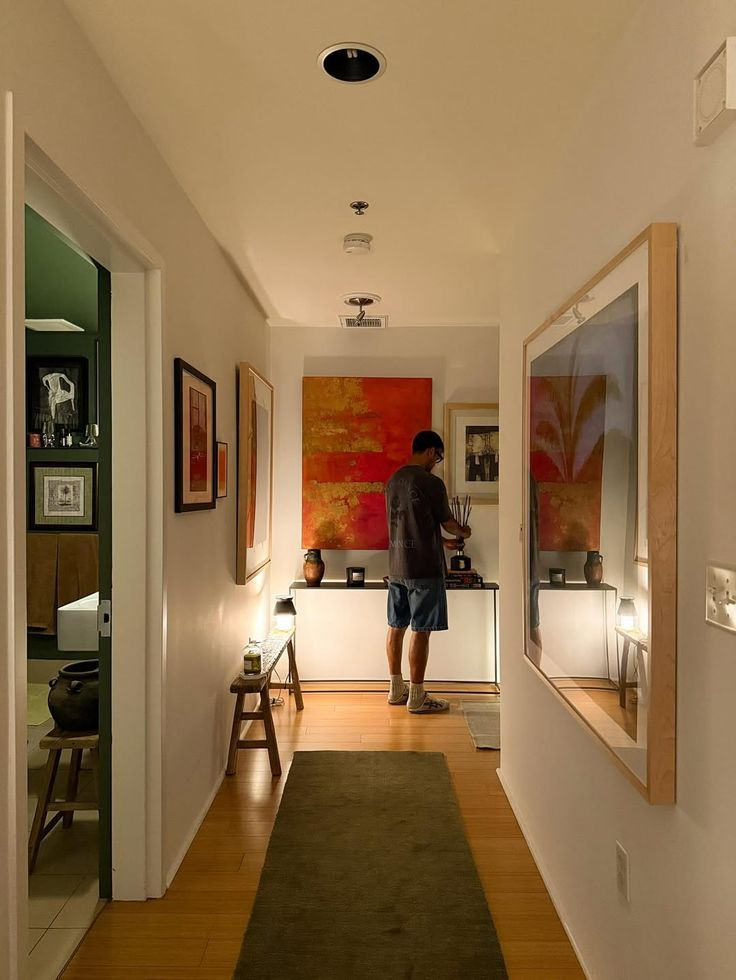
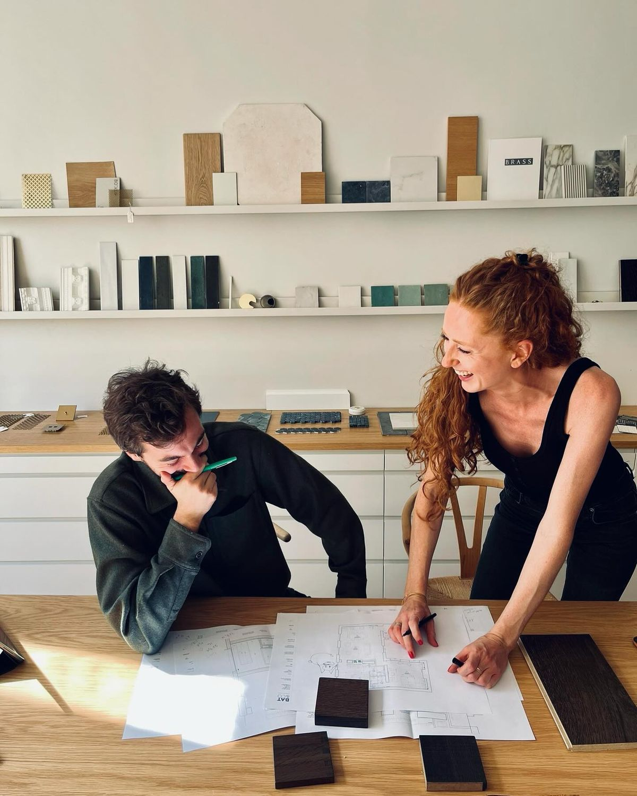

Arquitetura que acompanha
do conceito à chave na mão.
Projetos residenciais e interiores em São Paulo — com a Morá presente da primeira conversa à última tomada instalada.
◇ Começar meu projetoProjetos residenciais e interiores em São Paulo — com a Morá presente da primeira conversa à última tomada instalada.
◇ Começar meu projetoCom sede no Campo Belo, em São Paulo, a Morá é um escritório de arquitetura residencial e interiores fundado por Mariana e Pedro. Sete anos cuidando de apartamentos, reformas e coberturas — sempre com presença na obra.
A gente projeta, coordena os fornecedores e acompanha o canteiro toda semana. Você não precisa virar gestor de obra: cuidamos de cada detalhe para o resultado ser exatamente o que foi aprovado.
Cada projeto é uma jornada única.
Do primeiro traço à entrega das chaves, criamos espaços que refletem quem vai morar neles.

Projeto e obra de 64 m² com paleta neutra, marcenaria sob medida e iluminação pensada ambiente a ambiente.
Saber mais →


Mariana cuida do projeto e da relação com você. Pedro coordena obra e fornecedores. Uma curadoria própria de marcenaria, revestimentos, pedra e iluminação — escolhida a dedo, projeto a projeto.
Conhecer o estúdioDepende do escopo. Um projeto de interiores fica pronto em 6 a 10 semanas; reforma completa com obra varia conforme a metragem. Na primeira conversa já damos um prazo realista.
Nosso foco é SP capital e região. Para outras cidades, avaliamos caso a caso conforme o tipo de projeto e o acompanhamento de obra possível.
Sim — essa é a essência da Morá. Visitas semanais ao canteiro, coordenação dos fornecedores e WhatsApp direto com o arquiteto responsável até a entrega.
Você recebe planta, ambientação em 3D, memorial e caderno de fornecedores. Tudo aprovado por você antes de qualquer execução.
Uma conversa de 30 minutos já dá pra saber se faz sentido trabalharmos juntos.
◇ Falar com a Morá